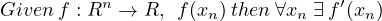
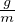
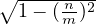
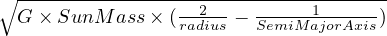

Gradient descent implementation’s example and
application on Celestial mechanics
Samy Badjoudj
March 11, 2023
Abstract
This document aims to describe gradient descent algorithm, its
implementations and how can it be used.
1 Introduction
1 Gradient descent is an optimization algorithm. The aim of gradient descent is to
converge to a local minimum/maximum of a function. We call it a first order
derivative iterative algorithm. It is labeled first order derivative, since we use first
derivative of the function during the iterations.
There are plethora of applications, easy to imagine, as soon as you want to
converge a local minimum/maximum (Machine Learning, mecanics, biology...). Since
the algorithm is widely used, you can find it easily, in many libraries.
Here we will go through the basics of the theory, then we will apply it on a
practical case, Earth Sun orbital system.
2 Requirement
In order to apply the gradient descent algorithm using a function these conditions
must be met.

Few differentiable functions
Few non differentiable functions
3 Algorithm description
The algorithm consist in finding the minimum through an iterative process. The
value Smin will be updated and will end with the value we are looking for.
Let’s define some parameters
-
f : Rn → R, noted f(xn) where xn ∈ R
-
α a scalar as learning rate
-
M as number of iterations
-
i current iteration
-
Si current point
-
∇f(Si) as gradient
4 Application on orbital Earth Sun system
Let’s apply this algorithmic on a concrete case. Earth Sun system could be an
interesting candidate.
In our Solar system Earth orbits around the Sun along an ellipse in a period of ≃
365 days with an average speed of 29.7827 km.s-1 .
Here is a figure that helps visualize (ellipse is flatened on purpose) :
4.1 Ellipse caracteristics
Few elements that caracterizes an ellipse d :
-
Semi-major axis m = F A
-
Semi-minor axis n = H A
-
Right focal length g = ASun
-
Two focuses, points C and S
-
Eccentricity =  = 
-
Any point P located on the ellipse (x,y) = (mcos(t),nsin(t)),t ≤ 0 ≤ 2π
4.2 Orbital Earth Sun system description
We are interested in computing the orbital speed of the Earth around the Sun. To
have a better understanding, let’s write some contextuel formulas notions and
data.
4.2.1 Some parameters
-
True anomaly (α in Figure 7) angle ∠EarthSunG
-
Orbital speed, speed of Earth orbiting around the Sun’s center
-
G ≃ 6.674 × 10-11 m3.kg-1.s-2 empirical constant factor used when
describing force between two objects
-
AU, Astronomical Unit, disance between Earth Sun, 1.4959787 × 1011m
-
Aphelion 152,097,597km, distance when Earth is the furthest from the
Sun
-
Perihelion 147,098,450km, distance when Earth is the nearest from the
Sun
-
Semi-major axis 149,598,023km (ellipse figure is flattened for visibility)
-
Eccentricity 0.0167086
-
Vis-Viva equation:
OrbitalSpeed = 
5 Example of implementation
5.1 Code relative to Earth Sun System
5.1.1 Compute Radius from Sun ≡ focus on the right, in Km
5.1.2 Compute orbital speed around massive object
5.2 Example of Gradient descent Implementation
5.3 Gradient descent graph
In red we see the orbital speed oscilliating between ≡ 30,3 km/s and 29,3 km/s.
If we draw the function for degrees more than 360°, we will see more clearly that the
funciton is periodic with a period of 360°(2π in gradient).
Then we see in blue the path followed by the gradient descent (α learning rate has
been put high on purpose to see the broken line).
We can notice that over the iterations, the blue, follows the red curve. The blue
curve is a broken line, the gradient direction scaled by the learning rate.
Behind the scenes, the algorithm keeps track of the minimum. Here we can see that
green line, is drawn at 180 °(e.q π radians),
5.4 Comments on results
The above implementation shows how a local minimum can be found by using a first
derivative order, and a simple structured algorithm. Gradient descent, can be scaled
to a function with higher dimensions.
Depending on the problem we want to solve, Gradient descent can be seen as a
solution for a subproblem. We will see in a next article in the context of machine
learning, how we can leverage Gradient descent to solve a polynomial regression
problem.
 initialize starting point
initialize starting point  maxmium of iterations
maxmium of iterations  update minium if necessary
update minium if necessary